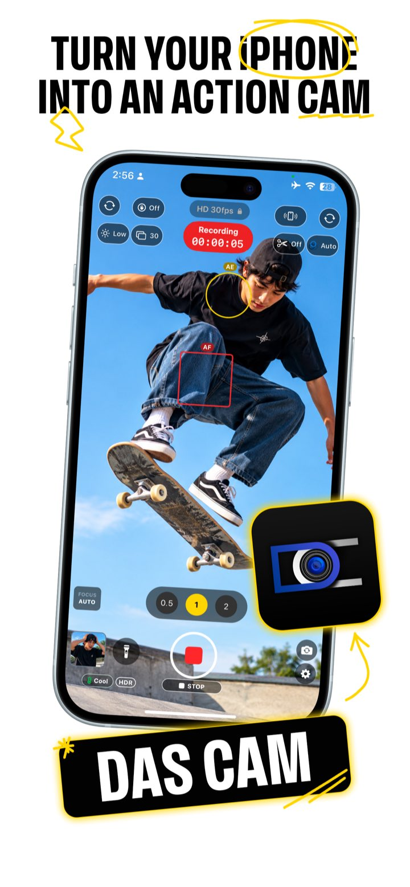
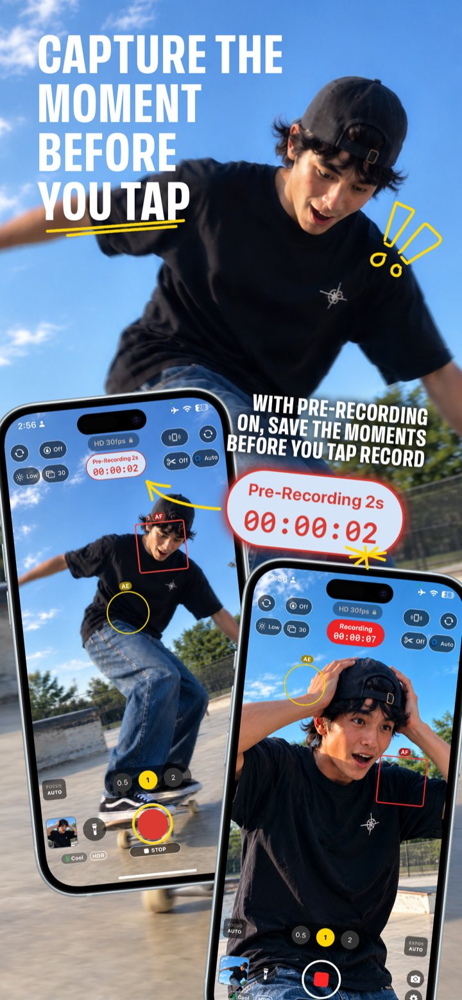
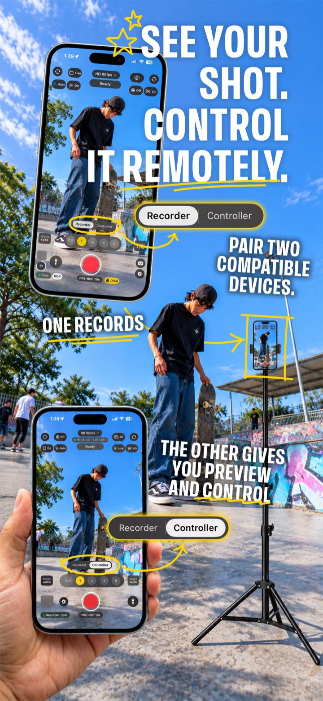
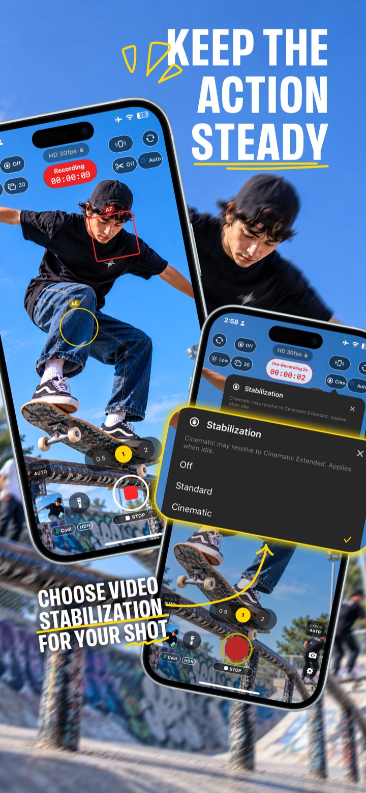
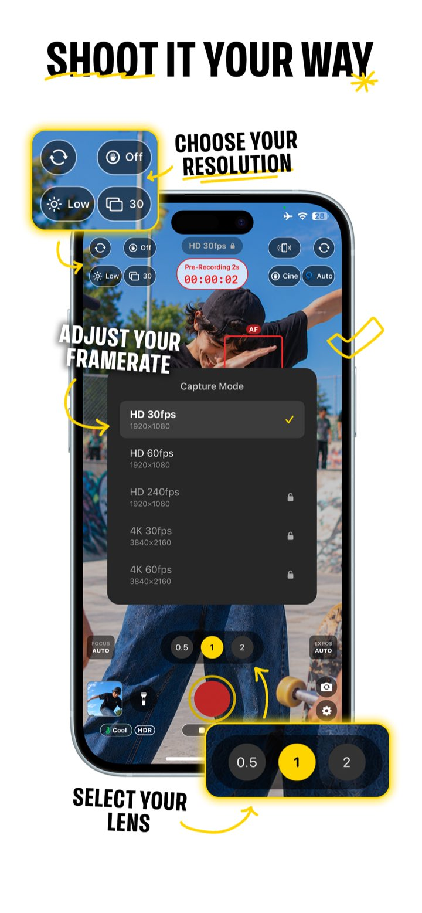

For filmmakers on iPhone and iPad
Your video starts before you tap Record.
Das Cam is a camera app for enthusiast and professional filmmakers who film with an iPhone or iPad. While Pre-Recording is on, it keeps the last few seconds of video, so your clip includes what happened just before you tapped Record.
The beta is on Apple’s TestFlight. It needs iOS or iPadOS 17.4 or later, and runs on devices as old as the iPhone XS and the 2017 iPad Pro. See which models.

01Pre-Recording
Tap Record after the moment happens, and still keep it.
Some moments cannot be planned: a kick, a surprise goal, a fly ball, or a small child doing something funny. You only know a moment is worth filming after it has happened. A normal recording starts when you tap Record, and by then the moment is over.
With Pre-Recording on and your device aimed at the subject, the camera keeps the last few seconds of video. When you tap Record, those seconds become the start of your clip, and the clip goes on recording until you stop it. So the saved clip has both parts: the seconds before the tap, and everything after it.

The moment came before the tap. The clip has it, and everything after it.
- AimPoint your device at the subject, with Pre-Recording on.
- Tap RecordTap Record after something happens.
- StopStop when you are done. The clip starts a few seconds before the tap.
02Camera Remote
Watch and control the camera from another device.
With Camera Remote, a second iPhone or iPad becomes a remote monitor. It shows the camera’s live picture, and it starts and stops recording from a distance, so the camera can stay where the shot is while you watch and control it from somewhere else. The two devices can swap roles at any time.
The two devices connect directly to each other. Read how pairing protects the connection.

03Camera controls
Control the image yourself.
Focus and exposure are separate controls, so you set each one on its own for fine control.
Focus
Set the focus point on the picture, and hold to lock it. Or focus by hand with the focus wheel.
Exposure
Exposure has its own point, apart from focus, and its own lock. Or set ISO and shutter by hand. The shutter shows as an angle and as a speed.
- Modes
- HD at 30, 60 and 240 frames per second, and 4K at 30, 60 and 120, depending on your device. 4K and HD at 240 are part of Das Cam Premium.
- Codec
- Every mode records HEVC (H.265) video.
- Stabilization
- Steadier video when the camera moves.
- Zoom
- Tap to change the zoom level.
- Flashlight
- Turn on your device’s light when the scene is dark.
- Volume buttons
- Press a volume button to record.


04Older devices
Runs on older iPhones and iPads.
Das Cam runs on every iPhone and iPad that can run iOS 17.4 or iPadOS 17.4, including models from 2017 and 2018. An older device can also be the Controller in Camera Remote.
- iPhone
- With iOS 17.4 or later: iPhone XS, iPhone XS Max and iPhone XR, from 2018, and every newer iPhone, including iPhone SE (2nd generation) and later.
- iPad
- With iPadOS 17.4 or later: iPad Pro 10.5-inch and iPad Pro 12.9-inch (2nd generation), from 2017, and every newer iPad Pro, plus iPad (6th generation), iPad mini (5th generation), iPad Air (3rd generation) and later.
- Tested on
- Developed and tested on an iPhone XS, an iPad Pro 10.5-inch, an iPhone 15 Pro Max and an iPhone 17 Pro.
05The beta
What you need
- An iPhone or iPad with iOS or iPadOS 17.4 or later. See which models.
- For Camera Remote, a second iPhone or iPad with Das Cam.
- Apple’s TestFlight app. The Join the beta page explains how to get it.
Send feedback
- In the appOpen Settings and tap Report a problem. You see the report before you send it.
- By emailcontact@env-media.com
Join the Das Cam beta
Try Das Cam on your next project, on the iPhone or iPad you already have.
Who makes Das Cam
Das Cam is made by a team with more than two decades of combined iOS development experience.
Every change to the app runs thousands of automated tests, on simulators and on real iPhones and iPads, before a build goes to testers. A bug fix comes with a test that fails without the fix, and that test then checks every later change.